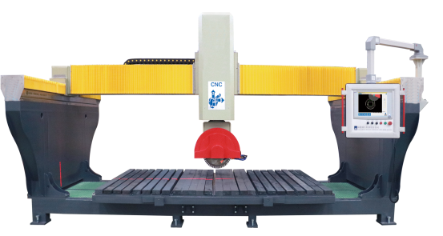

项目概述：
项目针对石材板切割的多样化和高精度需求，结合市场上普通红外线桥切机和五轴联动桥切机控制需求，开发出适用于两轴、三轴、五轴的数控桥切机专用控制系统。
应用效果：
经过现场试切，加工精度可达：0.06—0.1mm；内置下料优化功能，根据加工订单和石材板毛坯尺寸，自动规划加工方案并生成加工代码，减少石材板余料，节省石材板10%；内置砂轮磨损自动补偿功能，可实现异型边的恒力磨边。
应用领域：
石材大板切割、磨边，异型石材加工。

数控石材桥切机应用实例